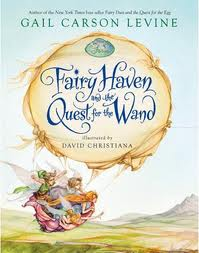

A Little Light Reading in February
A few days ago I had this exchange on Twitter:
@amyrhoda: Yay, I finished a book off my TBR shelf! And added four more in the meantime... *headdesk*
@ryan_price: ha! I just added 3 books yesterday... But i didnt finish another :(
What I didn't tell Ryan was that three of the four books I added were children's novels or YA novels. Since then I read two of them, and then realized that the last one wasn't in keeping with my Alphabetical Reading List Plan , so I set it aside. (I'm adding new books to the end of the TBR pile; I can't read them until I've won the alphabet.)
These are the books I read:

Fairy Haven and the Quest for the Wand by Gail Carson Levine. Once upon a time I told myself I would read all the books my kids read. I don't know what crack I was smoking, because a) I don't even have time to read the books I want to read, b) Delphine reads about a million books a day, and c) she reads some serious crap. Good stuff too, but lots of crap.
This one intrigued me, though. On the one hand, Disney. (That's bad.) On the other, Gail Carson Levine. (That's good.) On the one hand, fairies. (That's bad.) On the other... Gail Carson Levine? Well, and I also love the illustrations, by David Christiana. And Delphine really enjoyed it.
So I gave it a read, and hey, it turns out to be pretty good. The fairy characters are interesting and well-rounded, in non-obvious ways. (Turns out Tinkerbell fixes things - she's a tinkerer, get it?) The conflict was exciting, the climax was thrilling, the writing was lovely. Gail Carson Levine trumps Disney!

Hoping For Home: Stories of Arrival is from the Dear Canada series of historical novels written as diaries. This one is a collection of short stories about immigration. (Well, and one about an aboriginal girl, which I guess was put in for political correctness but since it's not actually about crossing the Bering Strait/Pacific Ocean thousands of years ago I think it's a bit of a stretch to include it in a collection about immigration; and another story which I'm not sure what it was about.) The authors include Rukhsana Khan, Paul Yee, and Jean Little. For some reason I love immigration stories, maybe because I immigrated/emigrated so often as a kid, maybe because I find the fact that people choose Canada as their home perversely flattering, definitely because I am in awe of the courage of people who come here with so little resources and so much hope.
Whatever it is, this book satisfied me with lots of good stories, although I'm not a great fan of the diary conceit. I often felt that the writing was too good to be a diary, especially a child's diary, and that pulled me out of the story. The author who really captured a child's voice was Brian Doyle. I also particularly enjoyed Paul Yee's story of a boy joining his father in small-town Saskatchewan; he brings the reader on the same voyage of discovery that the protagonist is taking.
Incidentally, this book was a cheat on my Alphabetical Reading List Plan; it is a book we own, so I should have put it at the end of the list. (The Levine was a library book so I had to read it before we returned it.) I just forgot...
Comments
Comments powered by Disqus